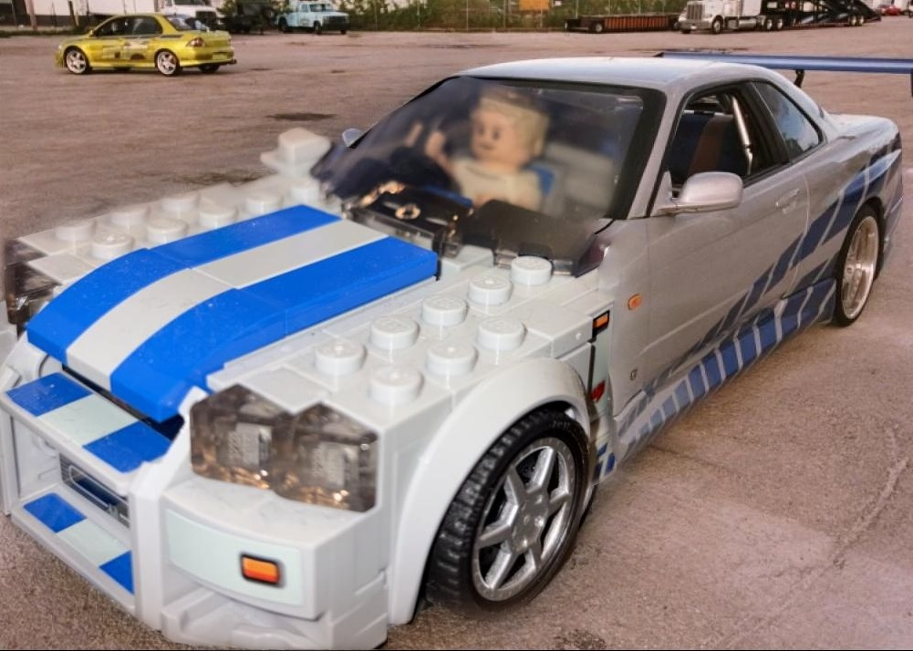

|
CS180: Intro to Computer Vision E Harrison — Fall 2026 Home / Course Website / Github |
ProjectsA collection of my project write-ups for CS180. Each page documents my approach, results, and takeaways for the assignment. |
|
 |
Project 2: Fun with Filters and Frequencies
Convolution, edge detection, hybrid images, and multiresolution blending Implementing convolution from scratch, detecting edges with finite-difference and derivative-of-Gaussian filters, sharpening, building hybrid images, and blending images seamlessly with Gaussian and Laplacian stacks. |

|
Project 1: Colorizing the Prokudin-Gorskii Collection
Aligning RGB glass-plate negatives into color images Reconstructing color photographs from Sergei Prokudin-Gorskii's early 1900s glass-plate negatives via exhaustive single-scale alignment and a coarse-to-fine image pyramid for the high-resolution scans. |
|
Project 0: Becoming Friends with Your Camera
Perspective, focal length, and the center of projection Exploring the relationship between camera distance, zoom, and perspective through selfies, architectural compression, and a dolly zoom. |
|
Website template from Jon Barron. |